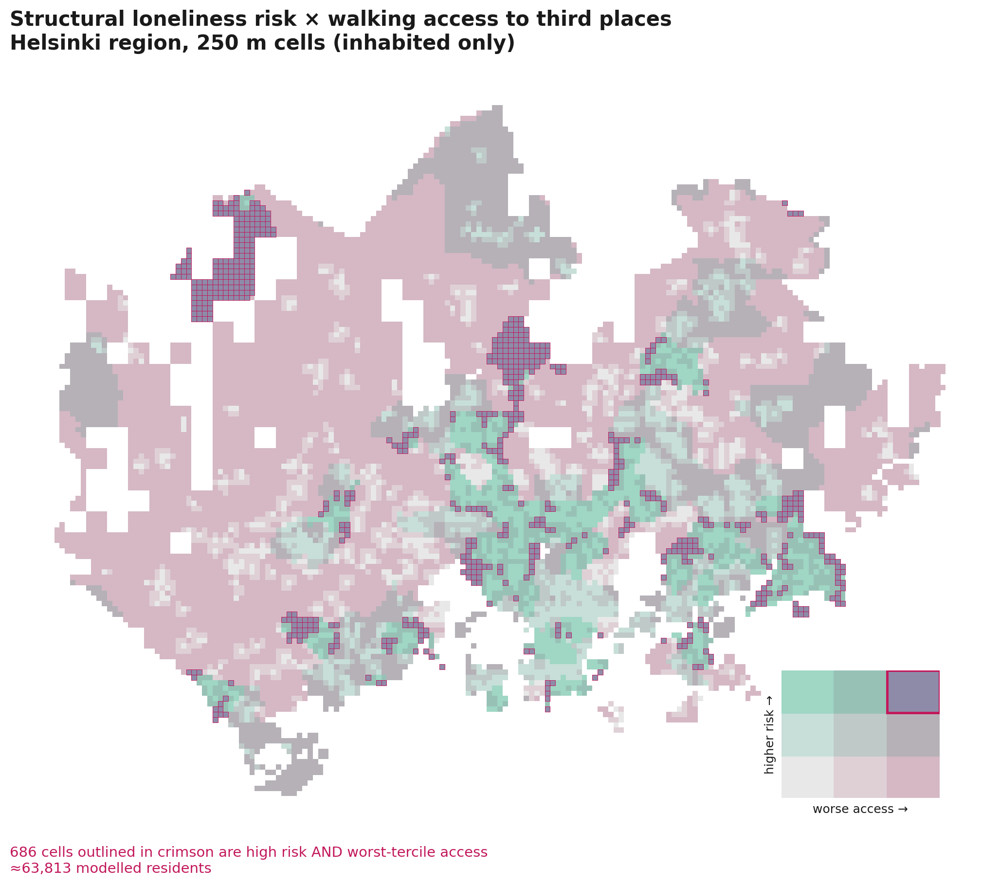
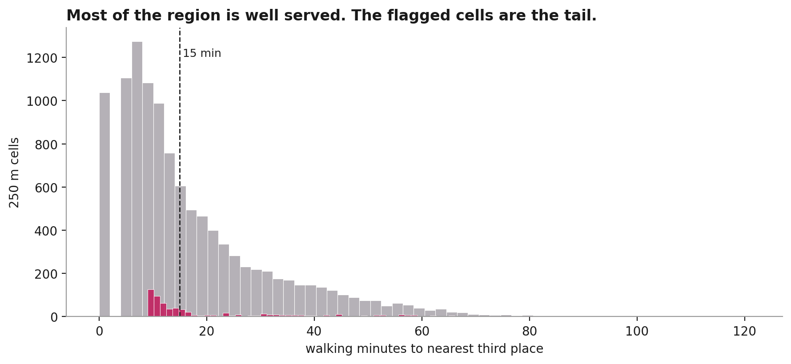
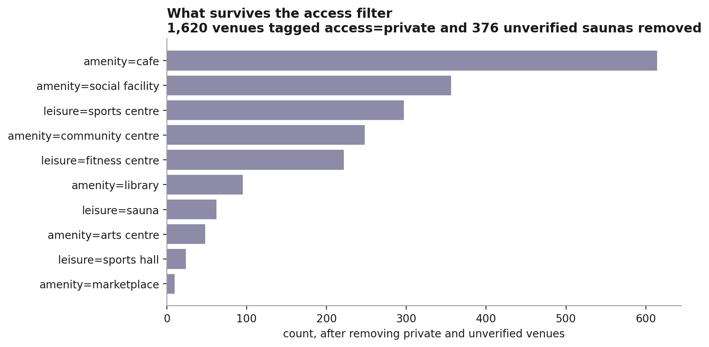

Open-data study · Helsinki region
Crossing structural loneliness risk against walking access to third places, at 250 metres, for the whole Helsinki region — and then asking what the map still cannot tell you.
Loneliness is treated as a housing-design problem and as a public-health problem, but rarely as a spatial targeting problem. Before asking what a shared-living intervention should look like, it is worth asking where the conditions for one actually coincide: people who are structurally more exposed to isolation, living where the informal places that produce unplanned social contact are furthest away.
This study builds that map for the Helsinki region from three open datasets, at 250-metre resolution. It took five days. It is a worked example of a method, not a finding about loneliness — a distinction the last section takes seriously.
Two variables, three classes each, nine combinations. Rows are structural loneliness risk; columns are how bad the walk to the nearest third place is. The corner that matters is the bottom right — high risk and worst access — outlined in crimson.


Pan and click. Each crimson square is a 250 m cell in the worst class; grey dots are the third places that survived the filtering described below.
Basemap © OpenStreetMap contributors, © CARTO.
| Postal area | Municipality | Cells | Residents | Median walk | Live alone | Aged 65+ |
|---|
Both of these inverted the finding rather than nudging it. Neither was visible until the first version of the map had already been produced and looked plausible.
1 · Land was voting instead of people. Cutting the terciles by cell count let empty ground decide. The Helsinki extent runs deep into rural Uusimaa, where a single postal area paints hundreds of near-empty 250 m cells as high-risk, all with long walks. The first run flagged forest fringe, an island and an industrial estate — 773 cells holding 9,149 people, about 12 residents per cell, against 270 per cell in the best-served class. It restated the fact that the countryside is not walkable.
The same contrast in one number: the median walk to a third place is 13 minutes per cell and 7 minutes per resident. Cutting the terciles by population instead makes "worst third" mean the worst third of residents — which is what a housing intervention actually asks — and the flagged set becomes the post-war suburban estates above.
2 · Half the apparent social infrastructure was private. The first
OpenStreetMap query returned 3,835 venues, of which 1,911 were saunas — nearly all of them
apartment-block and student-housing saunas tagged access=private. Finnish
mappers also frequently leave building saunas untagged entirely.
Used naively, this makes every residential block look richly served by shared social space, because every residential block has a sauna in the basement that only its own residents may use. Removing venues tagged private, and requiring an untagged sauna to carry some positive public signal, drops the dataset from 3,835 to 1,976 and materially moves the accessibility surface.

The map identifies sites. It does not specify interventions — and the gap between those two things is not a detail, it is where design does its work. Below, three flagged clusters translated from a location into a specification. These are hypotheses to be tested with residents, not conclusions; the point is that they are the kind of statement a map cannot produce on its own.
6 cells · ≈2,790 residents · the densest flagged area in the region
The counterintuitive one, and the reason the map is worth building: this is
inner Helsinki, not a remote suburb. Density is not the problem and a community centre is
not the answer. The problem is geometry and ground floor — a peninsula has one way
out, so every resident already passes the same neck of land, and small flats produce a
high share of one-person households with nothing at street level to walk to.
Specification: put shared provision at the neck, where all movement
already converges, not at the tip where the sea view is. Require a minimum share of
non-residential ground-floor frontage along the single spine rather than leaving it to
lease-up. And design for a sea-exposed site — a route that is sheltered and lit is the
difference between a 14-minute walk taken and not taken in February.
16 cells · ≈3,610 residents
A monocentric estate: one well-provided local centre serves the middle
well and the edge badly, and it is the edge cells that flag. The 10-to-20-minute spread
inside one small area is the whole diagnosis — this is a distribution problem, not
a provision problem.
Specification: do not build a second centre; the population will not
support one and it would cannibalise the first. Distribute instead — small bookable rooms
of roughly 40–80 m² at ground level in the existing blocks at the estate edge, sited
on the internal path network residents already use, each within about 300 m of the
blocks it serves. The building stock to convert already exists; what is missing is the
right to use it that way.
13 cells · ≈2,440 residents
The inverse profile of the other two, and the hardest. Few people live
alone yet; the oldest population in the flagged set is mostly couples in houses
they own, and the arithmetic of the next fifteen years turns a large share of them into
one-person households in place. There is no ground floor to convert, no shared land, and
single-family plot zoning.
Specification: here co-living cannot be a building type — it has to be a
plot and tenure instrument. Complementary building rights permitting a second small
dwelling plus one shared room per three to five plots, with the shared unit placed on the
plot boundary along the existing walking route to the bus stop, never in a back garden.
A shared room you have to be invited into is not a third place.
Three areas, one class on the map, three incompatible answers. A ground-floor requirement, a distribution rule and a zoning instrument are not variants of one intervention. That gap is not a shortcoming of the analysis — it is the point. The map is a targeting instrument, and targeting is where design work starts rather than where it finishes.
Every step is scripted end to end; nothing was done by hand in a GIS. The pipeline is four scripts: fetch Paavo, fetch OSM, fetch the population grid, build the index, render.